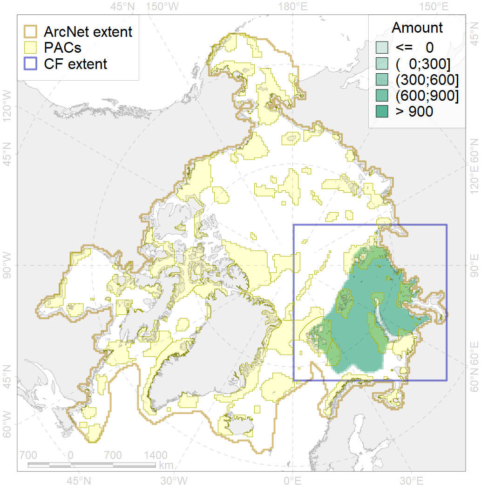
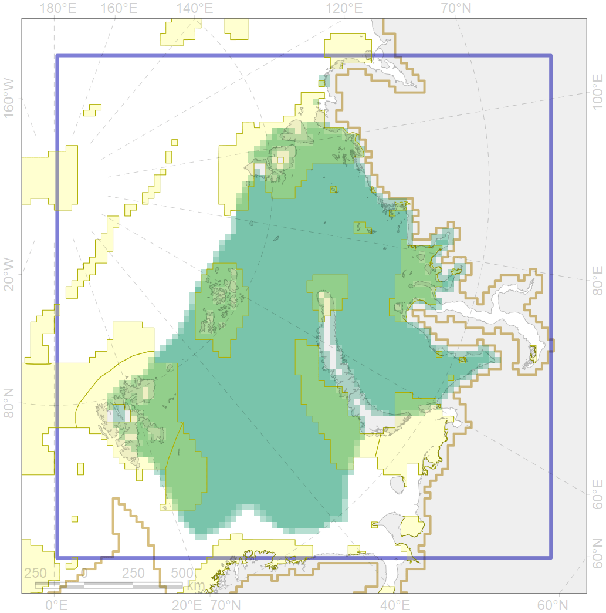

4076

| CF ID | 4076 |
| CF Name | Fish zoogeography, Arctic Region, High-Arctic Shelf Province, N Barents – Kara-Sea District |
| Time Period | 2019 |
| Source(s) | Chernova, produced for this project |
| Seasonality | January-December |
| Depth Horizon | |
| Methodology | expert opinion based on summarised data of trawl surveys and multiple publications |
| Author Name | N. Chernova |
| Notes | |
| Conservation Target Set in the Scenario | 0.07136242 |
| Conservation Target Achieved in the Scenario | 0.276 (Scenario: 387.0%) |
| PAC ID | Proportion in the PAC | Contribution to ArcNet Target Achievement | PAC’s Contribution to the Achieved Target |
|---|---|---|---|
| 14 | 4.9% | 58.3% | 15.1% |
| 15 | 0.3% | 3.7% | 0.9% |
| 16 | 3.0% | 39.2% | 10.1% |
| 18 | 0.1% | 1.4% | 0.4% |
| 19 | 1.4% | 16.6% | 4.3% |
| 20 | 0.7% | 9.1% | 2.4% |
| 21 | 5.1% | 62.6% | 16.2% |
| 22 | 4.0% | 54.1% | 14.0% |
| 30 | 4.3% | 59.1% | 15.3% |
| 31 | 3.2% | 40.7% | 10.5% |
| inner | 27.1% | 344.8% | 89.1% |
| outer | 72.9% | 42.2% | 10.9% |